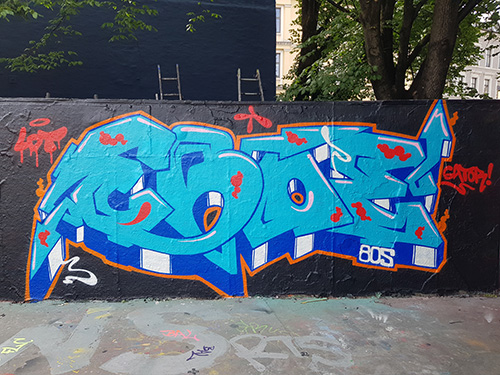

About Eboes graffiti blog
Eboe is a school project at Noroff School of Technology and Digital Media. This project is a combination of two hobbies, graffiti and creating websites. All the pieces is painted at walls in Norway at permissioned walls in Oslo, Kristiansand, AaS, Ski or Drammen, except for the truck in my first post. The truck is painted in New York by Fernando Carlo Jr aka Cope2 from Bronx NYC
